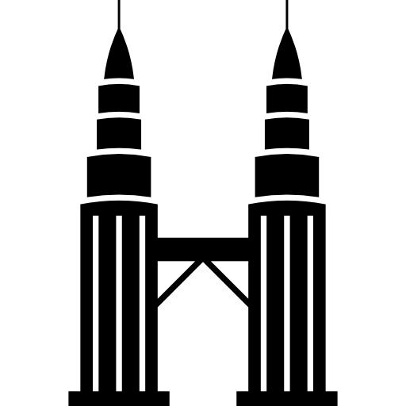
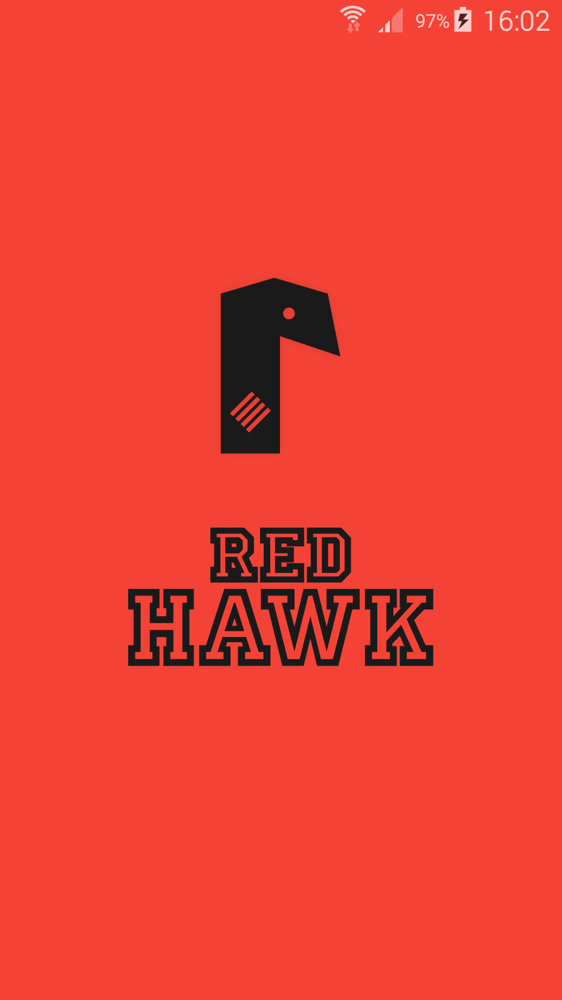
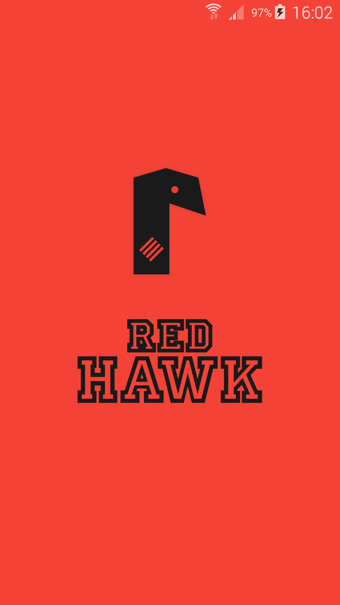
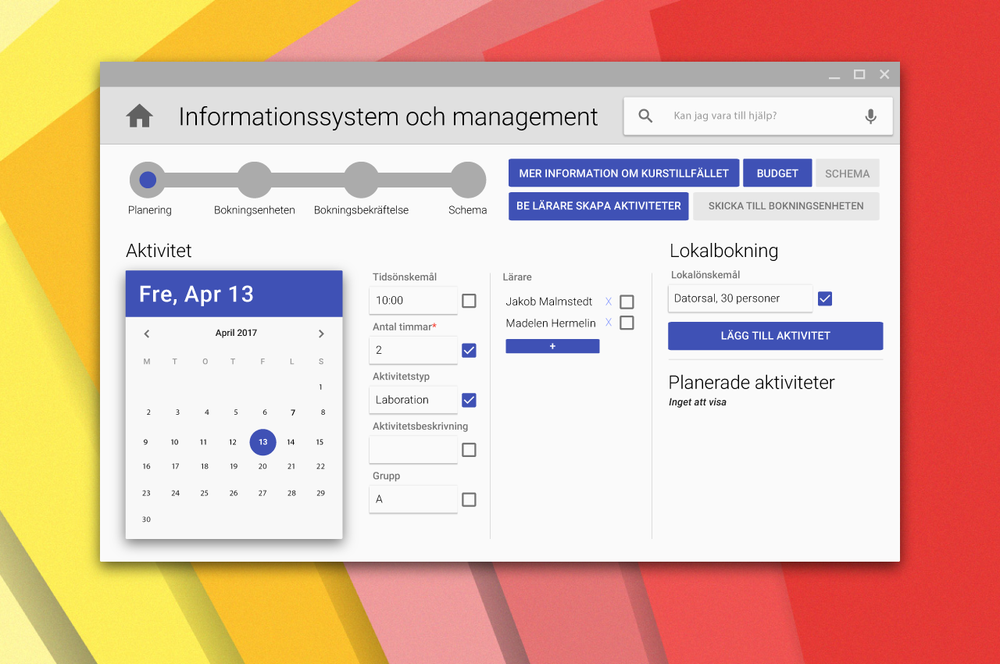
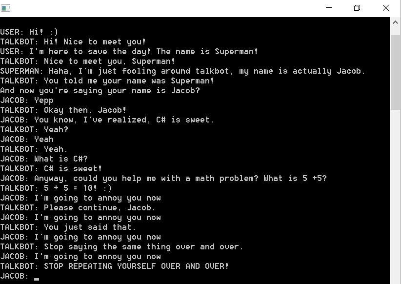
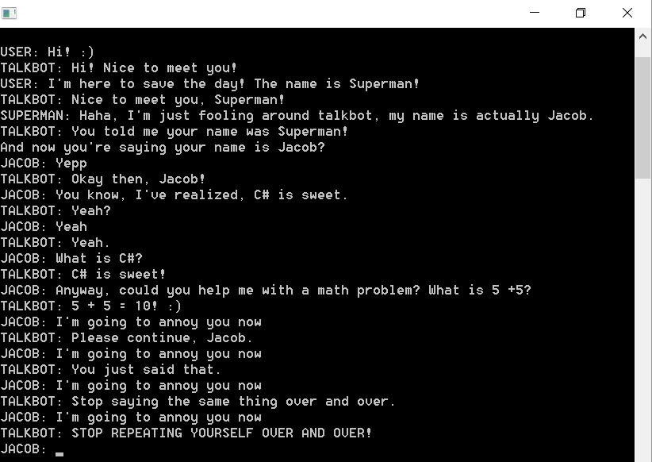

Innovations drive the world forward, and the IT industry is a great place to experience, envision and create real innovations. While I am still a mere student, and will be for a while longer, I strive to push the boundaries of technology, and am actively educating myself to reach a point where I can make a difference. I love learning new things, I love working with awesome people who also have a bright vision of the future, and I love technology. I get a rush from seeing the latest innovations in internet of things, self-driving cars, ai and big data, seeing the design of the latest smartwatch, trying the latest VR demo, seeing the future video games, analysing the UX of products and learning programming languages. Simply put: I have a passion for technological wonders. Ten years from now, I see myself as a developer, consultant or manager in the IT industry. As traveling is my second passion, I aim to start an international career.
Portfolio
Welcome to my portfolio! I presume you made your way here from my LinkedIn, which is also where you will find a list of my skills, jobs and studies. This website is dedicated solely to showcase some applications that I have built. I love building things, as it allows me to express my creativity. I love the entire process: brainstorming broad ideas and unnecessary details in a notebook, expanding on them in digital text, and getting to work in whatever software the project demands. It's great fun and greatly rewarding! The worst part is that you learn new things too fast! A project that I finished only three months ago will already look greatly outdated, as I gain greater understandings on how to perform my craft, and thus also learn new ways of doing things. Nevertheless, here are a few of the things that I've built! Note that most of these projects are one or two year(s) old, as I have not had the time to build apps in my spare time recently. Again, this portfolio is focused on things that I have built in regards to programming, while recently my life, both academic and otherwise, has been filled with other sorts of projects, which I would love to talk about too.
Jacob's Design Playground
This was one of the very first apps that I created by myself. I made it during a summer while I was simultaneously learning Adobe Illustrator. This app is a collection of single-screen, functionless designs. It was a way for me to fully understand how Android controllers work (activities, adapters, etc.), and also how XML works in Android and finally how vector graphics can be used to create assets for apps.


Encu
Encu is an app for encrypting pieces of text. It uses a decently advanced formula of the Ceaser cipher, but of course, no matter how advanced it is, it's still a Caesar cipher. You can put a suit on a goat, but at the end of the day, it's still just a goat. I never intended to create any ground-breaking encryption algorithms with this app, it was just another practicing step for me. The app allows users to easily encrypt or decrypt pieces of text. Encrypted texts can be saved to the device. As this was an early project for me, adding internet features was out of scope, and thus users cannot send encrypted texts to each other. Rather, they can copy texts, and then send them via text, e-mail, or whatever they please. This can create a bad user experience, I acknowledge that, but this app was of course never intended to be released on Google Play. Oh, and you might be wondering why there are two keys rather than just one. From a technical standpoint, using the second optional key doesn't really make much of a difference, it was more an idea for the user to have the ability to use a secondary key that he or she may store in a separate way than they store the first key. Users also like to use numbers that mean something, and so this way, they can reduce the chance of anyone finding out their keys, by having two of them that must be used together.
The design that I made for the app is quite unusual for an Android app, though I've grown fond of it myself. The idea for pixel-perfect rectangles came from looking at the Windows Phone operating system. The colour scheme for my app uses three tints of bluegrey, and every element has some level of transparency. It all creates an interesting look. Whitespace is kept to an absolute minimum in favour of boldness. Trust me, the interface feels better when you see it on an actual device. While looking at the screenshots below, one big oversight can be seen at the bottom of the third screen (not visible if you're viewing this website on a mobile; I know, I know). The button to the left says "cancel", while the button to the right says "back". In retrospect, it's unintuitive to have anything but "continue" on the right side, but my idea was that the large "continue" button above would be clear enough.


Natara
This was my first app that collected data from the internet, using JSON. There's not much too say about the app, it's just a simple and pointless weather app. On the central tab, the user can get an overview of today's weather. To the right is an overview of the week, and to the left is an overview of the next 24 hours.

Other Various Android Projects
I've made many tech demos, such as one named Red Hawk, where I've been trying out transitions, animations and more. At the time of writing this, I started work on a notebook app just a short time ago. The idea is to have all notes in one place, with a simple-to-use interface, split into four tabs. The user can store regular notes, as well as hidden notes, and the user will have the option to set a password for these hidden notes. There will also be to-do and to-buy lists, where the user can very quickly add and remove items.

 



UU-Plan
Together with three other students, I created a concept for a planning and evaluation system for Uppsala University. We created information, process and systems models, a specification of requirements, a database design, a message of change, various analyses, a definition of terms for business language, and more. We put a lot of effort into understanding and helping the stakeholders involved, and to understand the change resistance involved. The project was very successful! Below are a few screenshots of the system. Most of the user interface was created by me.
Design documentation for mobile UI
I've created an extensive design specification for creating an e-mail client on mobile devices, more specifically using an e-mail client built for desktop devices as reference. The paper was written in Swedish. Below are two short excerpts.
Early .NET Projects
As soon as I had finished my first course in C#, which was also my first course in programming altogether, I was excited to try to make some software all on my own. First, I made a practically non-graphical turn-based game called "The Cave". It took an insane amount of time, but I got it done and it's functional, even if it's not a very exciting game. I also made a talkbot; that is, a bot that can talk to you. It also took an immense amount of time, and it works somewhat okay. I've been considering redoing the talkbot entirely as a phone app, using more advanced techniques, however it's a very time-consuming task, and a pretty pointless one at that, since every operating systems manufacturer has their own talkbot. Still, both of these projects were fun and presented many challenges that taught me a lot of things along the way.
 

This website
Bet you didn't see that coming. This is a very basic website, but nevertheless one that I built from the ground up, and had a lot of fun making! I quite like it. It's gone through many changes; it used to have way more content as I fragmented my digital self by also posting skills and experiences here, but it's very clean as it is now. It also has orange as its accent colour, so it beats every other website on that merit alone. Here are some redundant screenshots of what the website looked like at the time of writing this, on a UHD-laptop screen.